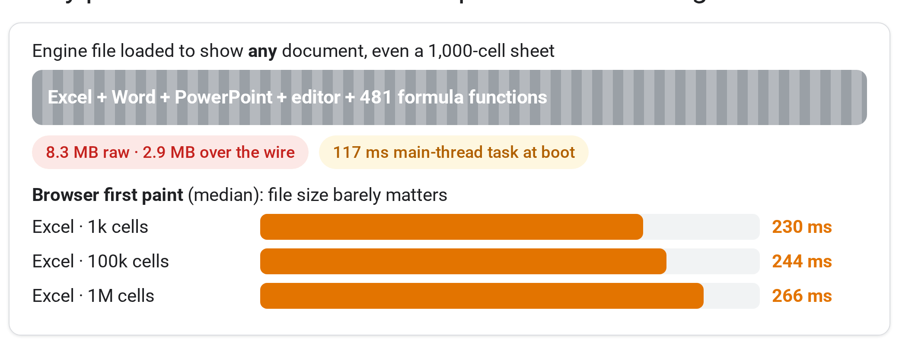
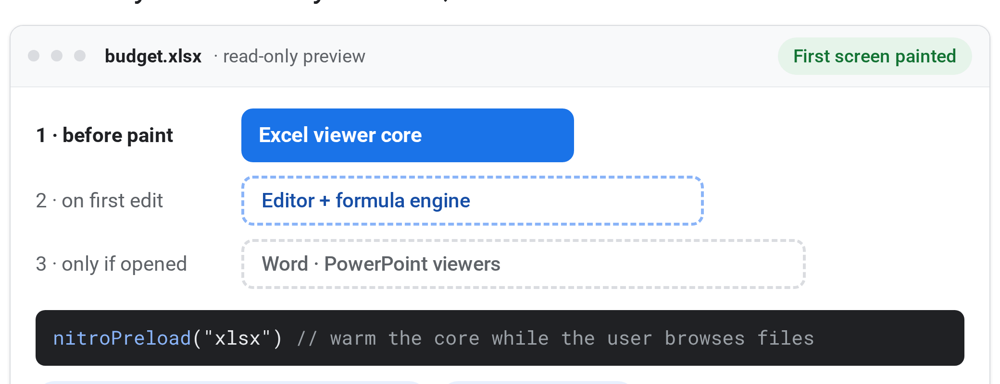
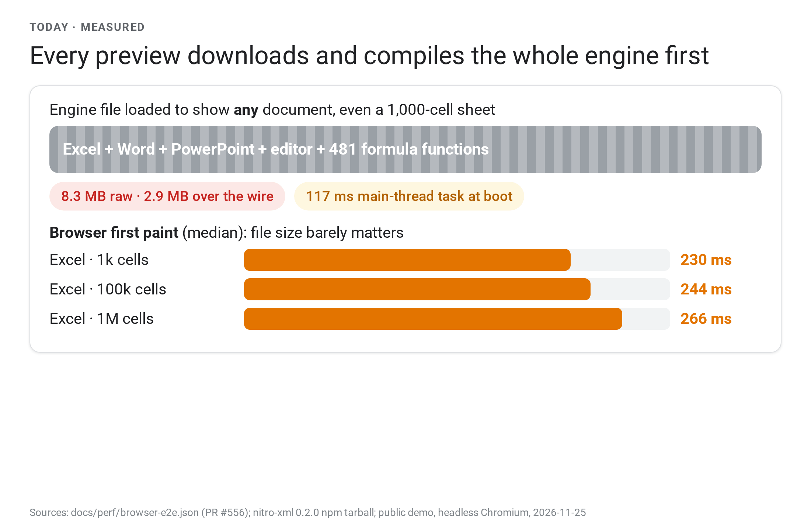
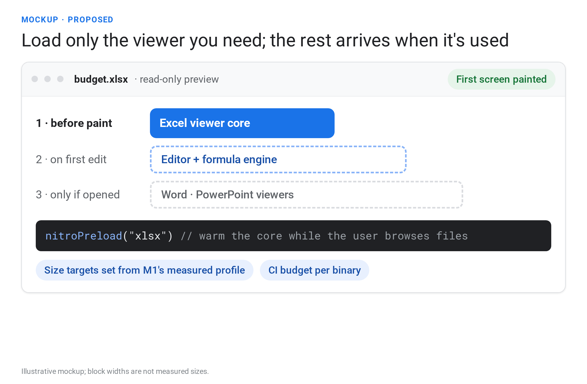

Show the first screen before the whole engine arrives: a lean viewer core per format, with editing and the other formats loaded only when needed
New strategic bet (2026-11-25). Complements #622 (document bytes) by cutting engine bytes.
Approve: tap 👍 on the issue · Decline: tap 👎
Close-up of the change




Full screen


Today every page downloads and compiles one 8.3 MB WebAssembly file (2.9 MB over the wire) that holds all three apps, the editor and the formula engine, even to preview a 1,000-cell sheet. A 1,000-cell sheet and a 1-million-cell sheet paint within 36 ms of each other, so engine start-up is most of the wait.


Mockup: a read-only Excel preview fetches only the Excel viewer core and paints. Editing, the formula engine and the Word/PowerPoint code arrive in the background or on first use, and hosts can warm them ahead of time.
Tap an image to open it full size.
Why
Nitro's parser is no longer the slow part. In the browser test, a 1,000-cell workbook paints in 230 ms and a 1-million-cell workbook in 266 ms. The fixed cost of starting the engine dominates, and that cost is one 8.3 MB WebAssembly binary with every format and every editing feature in it. A preview pane that only shows Excel files still pays for Word layout, PowerPoint, the editor and 481 formula functions on first open. Splitting the engine so each preview loads only what it shows makes the first visit faster for every file, of every size. It complements #622, which cuts the bytes of the document; this bet cuts the bytes of the engine.
Who it wins
Embedding developers first: preview panes in React apps like the one Jared's company runs over AWS EFS, where most opens are read-only and many are first visits or arrive after the browser cache was cleared. Then every user on a slow or metered connection. Hosts that only embed one format stop shipping the other two.
Phased plan
Each milestone ships on its own.
- M1 · Size profile and per-format builds (about 1 week)A CI size report that breaks the WASM down by crate and feature, plus three build targets (Excel, Word and PowerPoint viewers) from the same source with Cargo features. Hosts can already point a format-only element at its own binary.
- M2 · Viewer core, editor on demand (1–2 weeks)Read-only open loads a viewer-only binary. Editing, the formula engine and dialogs load as a second module the first time the user edits, with no visible change to the editing UI. Cached values are shown until the formula engine arrives.
- M3 · Warm-up API and loading hints (3–5 days)nitroPreload('xlsx') and a React usePreload() hook let a host fetch and compile the right core while the user browses a file list. The demo and docs show modulepreload and Cache-Control recipes for S3/CloudFront.
- M4 · Budgets that hold (2–3 days)Per-binary size budgets in CI next to the 17,408 B eager-loader budget, and a first-visit row in docs/perf on a throttled network.
Evidence
- Browser first paint (median, localhost, fresh browser): Excel 1k cells 230.0 ms, 100k cells 244.1 ms, 1M cells 266.1 ms. Word 10 pages 230.5 ms. PowerPoint 10 slides 255.0 ms.Source: docs/perf/browser-e2e.json (PR #556), main 028ebf9
- The npm package ships one binary, pkg/nitro_xml_wasm_bg.wasm: 8,320,060 B raw, 1,924,802 B with brotli (quality 11).Source: nitro-xml 0.2.0 tarball from npm, measured 2026-11-25
- The public Excel demo transferred that binary as 2,887,217 B (gzip) on every format's page. The first load showed a 117 ms main-thread long task during boot.Source: Resource Timing and a long-task observer on jgridifier.github.io/nitro-xml/demo, headless Chromium, 2026-11-25 (one run)
- The loader already uses compileStreaming and keeps the binary in Cache Storage, so repeat visits skip the download. First visits and evicted caches pay the full size.Source: packages/nitro-xml/loader/bootstrap.js, main 028ebf9
- Formula coverage is 481 of 481 catalog functions, all compiled into the same binary that read-only previews load.Source: docs/formula-coverage.md
- Open signal: #532 (844 kB emf-converter chunk in consumer builds) shows bundle weight already reaching host apps.Source: issue #532
Definition of done
- CI publishes a per-crate size report for each WASM binary and fails on budget overruns.
- A read-only Excel open fetches only the Excel viewer binary. A CI test asserts that no editor or Word/PowerPoint module is requested before first paint.
- The first edit loads the editor module and works identically. The existing interaction and editor suites pass unchanged.
- nitroPreload() and React usePreload() are documented, with an S3/CloudFront caching recipe.
- docs/perf gains a first-visit, throttled-network row for 1k-cell xlsx, 10-page docx and 10-slide pptx, before and after. Eager loader under 17,408 B. All required checks green.
Approve: tap 👍 on the issue · Decline: tap 👎